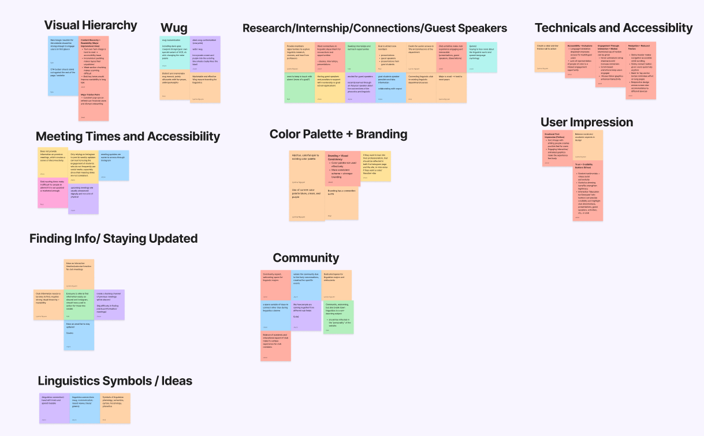
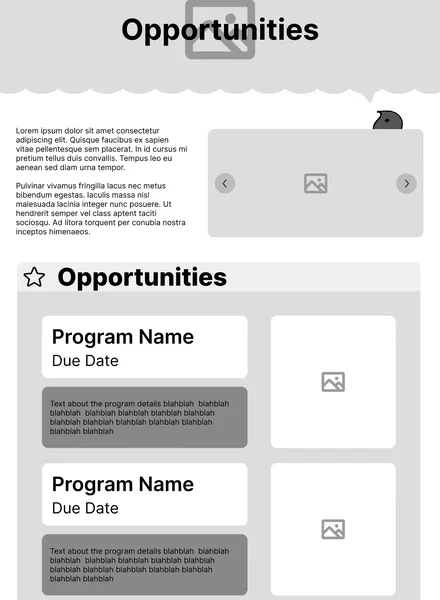
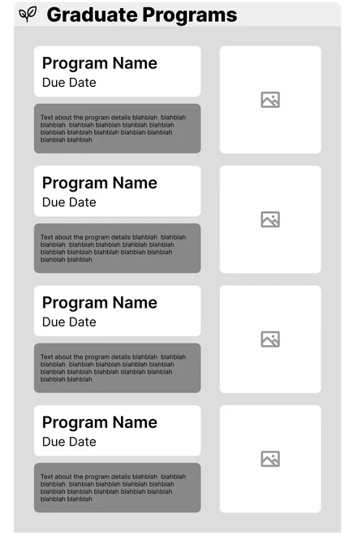
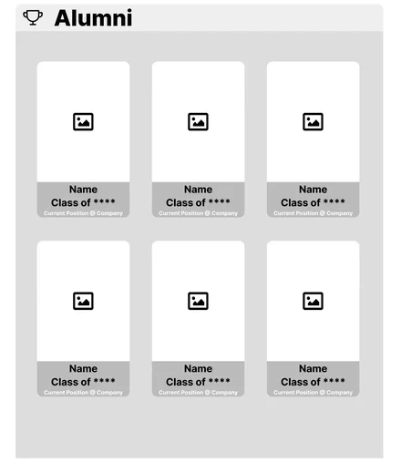
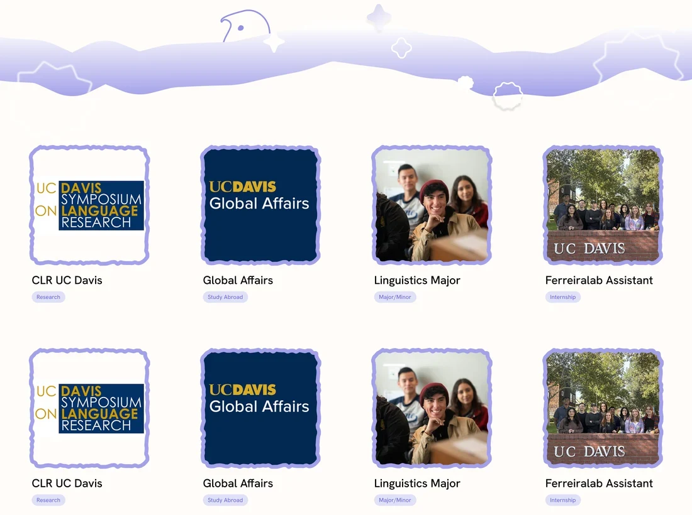
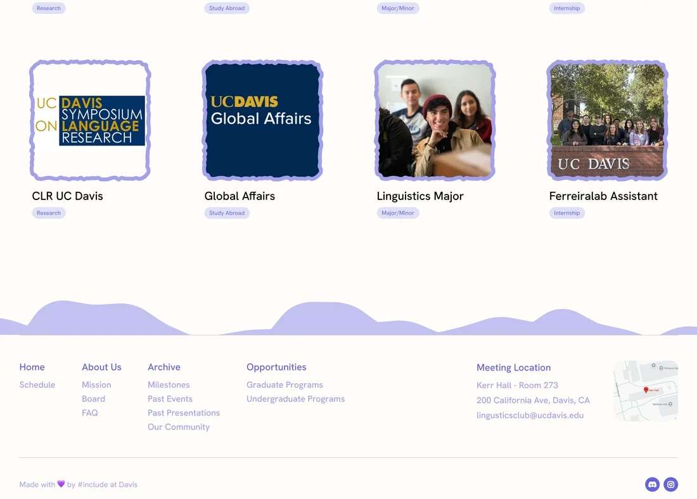
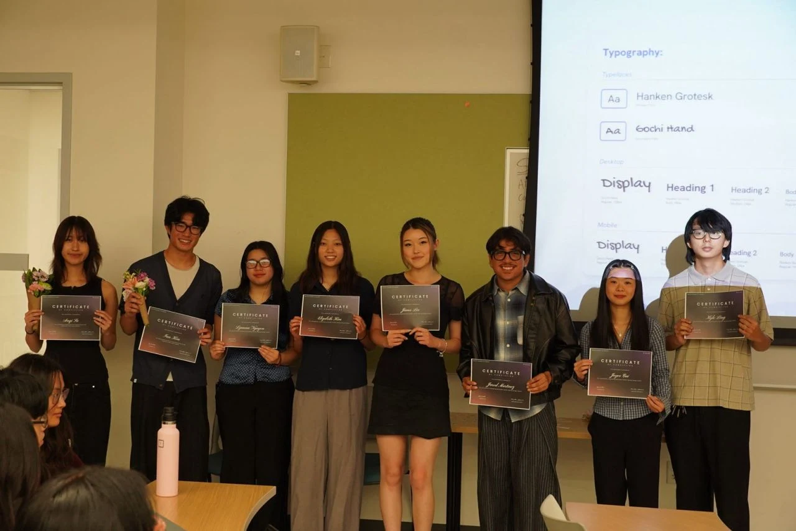

Linguistics students wanted to get involved, but had to dig to find a way in
UC Davis Linguistics Club was brand new, and its meeting times, events and academic resources had no single home. Students curious about programs, research and study abroad in the major had no clear place to start.
Through a two-quarter #Include design cohort, our team of 14 was challenged to build the club its first website. As one of 5 designers, I owned the pages that help students find opportunities in the major. My contributions included:
- Owned the Opportunities pages across 3 design sprints, taking them from lo-fi sketches to hi-fi prototypes.
- Researched 3 peer linguistics organization sites and helped shape the whole site’s information architecture.
- Refined the pages through usability testing at every stage, cutting what slowed students down.
A new club with nowhere to send curious students
Club information, meeting schedules and academic resources were scattered, with no central place to find them. For a newly established club, that weak structure limited outreach and made it hard for 150+ linguistics students, from undergrads to grad students, to discover what the major could offer.
How might we make career and research pathways in linguistics transparent, tangible, and easy for students to navigate?
Interviews showed the information existed, but students couldn’t find it
We interviewed club members and board representatives, I ran a competitive analysis of 3 peer linguistics sites, and we sorted every note into themes over three rounds of affinity mapping.

- Information structure. Text-heavy, unstructured pages with no archive of past events.
- Navigation. Hidden calls to action, so events and resources were hard to discover.
- Visual hierarchy. Weak hierarchy and inconsistent type made pages hard to scan.
- Engagement. Static content gave students little reason to come back.
Why it matters: for a new club, students who can’t find information quickly never get involved, so I built the Opportunities pages around browsing, not digging.
Testing the mid-fi showed where density got in the way
What didn’t work
We put the mid-fi Opportunities page in front of students in usability testing. The visual density created more friction than help in three places:
1No clear place to start

Text, but no search- Students landed on a wall of text
- Usability test · Mid-fiNo search or filters to guide them
2Three heavy boxes for every program

Three boxes per program- Every detail of a program in one place
- Usability test · Mid-fiA name box, text block and image box made each listing heavy
- The same pattern repeated in every section
3An alumni section we couldn’t fill

No alumni to feature yet- Shows where the major can lead
- The club is too new to have alumni to feature
What I chose
I gave the page one clear starting point and lightened every listing, so students could browse instead of dig:
1Put search and filters first
- Students jump straight to the programs they want
- Client reviewPlaced right under the title after talking with the client
2One light card per program

One card per program- Just a photo, a title and a tag
- An open grid that eases visual strain
3Kept the page on current opportunities

Ends on current programs- No empty sections waiting on content the club doesn’t have yet
Opportunities students can browse in seconds
The final Opportunities section opens with a program search and filters, then lays every program out as a light card students can scan, with separate pages for undergraduate and graduate opportunities. We delivered 3 key pages across 3 design sprints for the club’s 150+ students.
Built for the next step
Finding a program is only half the job, so every page makes it easy for students to act on what they find:
1Save a program, or go straight to it
- Saving stars the program on the list, so students can come back to it later
- One link to the program’s own site, with no searching around
2A mailing list so students never miss an opportunity
- Meeting reminders, new opportunities and event invites come to students
- Hints under each field prevent mistakes, like using a non-UC Davis email
Try it all below: search and filter, open a program and save it, or switch between Undergraduate and Graduate from the menu. Toggle Desktop to see the same flow in a browser.
What my first UI/UX project taught me
- Design for people, not just screens. My first real client taught me to look past how a page looks to whether students can actually find what they came for.
- Keep the experts close. With more time, I’d plan further outreach with the client and talk with linguistics professors and TAs to uncover more opportunities for students.
Thank you to my wonderful team!
A big thank you to my #Include teammates and co-leads, and to UC Davis Linguistics Club for trusting us with their first website.
